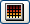

To modify existing colormaps push the edit button which is visible when the colormap is selected.
As you can see, there is a menu bar near the top border of the window with the submenus Edit, Mode, and Brush, which will help you to control the behaviour of the colormap editor and to change components of the chosen colormap. Below the menu bar a so-called "color chart" is displayed. The red, green, and blue lines are the graphs of the color channel components of the colormap. The underlying color model is RGB (at startup). The axes are not shown directly; the x-axis ranges from the lowest to the highest colormap index and the y-axis from 0.0 to 1.0 according to the RGB model. Thus, a point on a color line indicates the amount of color for the corresponding color channel and color index. You can manipulate the course of a line by setting a brush onto any of its points and moving it up or down. A brush is set by pressing a mouse button, the left one for the red line, the middle one for the green line, and the right one for the blue line.
Below the color chart a "color bar" is displayed which is a larger version of the one used for display in the colormap port. Its only function is to show you the actual appearance of the modified colormap in a smoother way by linearly interpolating the colors between the indices.
The largest area of the editor window is occupied by the "color buttons" which represent the color in every position (index) of the chosen colormap. Each position is called a "color cell". You can set the focus which is the target index of modifications applicable by the color sliders (see below), and it is also possible to modify the colormap by dragging a color cell. The index of the focus color cell is shown below the color buttons.
In the lower area of the window there are some "color sliders", one for each color channel by which you can modify color channel values with respect to the focus cell. This means that the values of neighboring cells are affected as well, as you can see in the color chart. The sliders are manipulated by dragging the small triangles; alternatively values in fixed-point format may be entered directly into the text fields to the right of the sliders.
The last three buttons named OK, Apply, and Cancel are for quitting the editor, applying your changes to the underlying Colormap data object, and quitting the editor without applying your changes.
Interactive editing of a colormap is facilitated by two user interface elements, the focus and colormap knots.
Focus: The focus marks the active color cell which can be edited using the color sliders. It is represented by a black-and-white box drawn around the active color cell and by a black vertical line in the color chart.
You set the focus by clicking with the left mouse button on a colormap entry in the color button panel. A focus cell also gets a knot marker (see below); clicking again on a focus cell removes the knot and places the focus on to the leftmost color cell, just setting the focus to a different cell does not remove a knot.
Knots: Knots are fixed points in the colormap, i.e., they retain their values while the colormap is being manipulated by snapping (see Menu bar/Edit/Snap) or by dragging the focus. Knots are represented by a small black box with a white surrounding in a color cell and a white vertical line in the color chart.
You set a knot by setting the focus and remove a knot (with the focus) by clicking another time on a color cell with the focus. The knots on the first and last cells of the colormap cannot be removed.
A. Menu Bar
The menu bar consists of the four submenus: Edit, Mode,
Brush, and Extras.
a) Edit Menu
This submenu offers two opportunities for editing the colormap.
The first group deals with the undoing and the
opposite - redoing - changes you made in the colormap. The second
group "snaps" one or more channels, like tightening a rope between
the left and right neighboring knots of the focus.
b) Mode Menu
This menu allows you to select the color model used to modify the
colormap. RGB Sliders chooses the RGB model where colors are
represented by a red, green, and blue component. HSV
Sliders chooses the HSV model where colors are represented by a
hue, saturation, and value (intensity) component. In addition, an
Immediate Mode toggle is provided. If this toggle is active, all
changes are immediately applied to the colormap and downstream modules
are immediately fired so that they can update their display.
c) Brush Menu
This has only relevance for the color chart. Here you can set the brush
type used for editing a color channel curve. Four different brushes
are supported. Their shapes are visually represented by corresponding
icons.
d) Extras Menu
This menu allows you to replace the whole colormap by one of a set of
predefined maps. Currently four such predefined maps are available:
a Gray ramp ranging from black to white, a Hue ramp
ranging from blue over green and yellow to red, a Hot iron
map ranging from red over yellow to white, and a Glow map
ranging from black over red and yellow to white. This last map is
frequently used in epi-fluorescence microscopy. Two additional options
are provided to subdivide the current colormap into a discrete set of
colors (Make steps) and to define an alpha curve with a
predefined gamma value (Alpha curve). If one of these options is
chosen, an additional dialog window pops up, allowing you to perform
the appropriate operations.
B. Color Chart
The color chart shows the graphs of the colormap's color channel
components. The red curve shows the first color channel (red or hue),
the green curve shows the second channel (green or saturation), the
blue curve shows the third channel (blue or value), and the black curve
shows the fourth channel (alpha). The knots and the focus are
represented by white and black vertical lines, respectively. The left
edge of the color chart shows the values of the leftmost index of the
colormap and the right edge those of the rightmost index.
C. Color Bar
Like in the colormap port, this color bar displays a
continuous form of the chosen colormap by linearly interpolating
the colors between the colormap entries. If Show Alpha is enabled,
alpha values are represented by a certain amount of transparency
in the colors, i.e., you see the colors translucent over a white
and black checkerboard pattern. For an alpha value of 0.0, you see no color
information but only the white and black checkerboard; for a value of 1.0
you do not see a checkerboard because the colormap entry is not translucent.
D. Color Buttons
An entry of the color button panel is also called a color cell. Each
color cell shows the color associated to a color index without the
alpha value. The indices are counted from left to right and from top to
bottom. Thus the color cell in the upper left corner shows the color of
the leftmost colormap entry and the color cell in the lower right
corner shows the color of the rightmost colormap entry. The index of
the focus cell is displayed below the color button panel. Just after
the index the data value which corresponds to the focus cell is shown
in brackets. The data value depends on the current range of the
colormap.
E. Color Sliders
In the lower area of the Colormap Editor window there are four
color sliders allowing you to modify the values of the focus cell.
Depending on the current color model, the first three sliders are
associated to red, green, and blue or to hue, saturation, and value,
respectively. The fourth slider always modifies the alpha value. In
front of each color slider there is a toggle button. If the toggle is
activated, the corresponding color can be edited using the left mouse
button in the color chart (see below).
F. Control Buttons
These three buttons let you choose whether the changes to the colormap
should be kept or not. By pressing the OK button the changes made
with the editor are written back to the colormap object that you are
working on. This action also causes the editor to exit. If you just
want to write back the changes without exiting, e.g., if you want to see
how your changes take effect, just press the Apply button. If
Apply is done in the Immediate mode however, the previous
state of the colormap cannot be restored by Cancel.
If you think that your manipulations have gone totally wrong, you can always decide to keep the old colormap and throw away your changes. This is done by pressing the Cancel button which also closes the editor window. Cancel restores the colormap to the last state when the Apply button was pressed, or to the initial, if Apply was left untouched.
This section describes how to modify a colormap in various ways. For the effects of invoking the various menu items, see Menu bar.
A. Using the color chart
A color channel can be edited by modifying the corresponding curve with
a brush. Values are increased by approaching the curve from the bottom
side with a brush while holding down the left mouse button, and vice
versa. Only one curve can be edited at a time. The curve to be edited
is determined by the toggle button in front of the four color sliders.
For example, if you want to modify the alpha curve, you first have to
select the toggle button in front of the alpha slider.
Four different brushes can be chosen in the Brush menu, namely a small square, a bigger square, a circle, and a diamond. The shape of the brush determines how a curve will be modified when approaching it with the mouse. When the brush touches the curve it moves the color channel up or down (depending from which side it comes) to the first pixel outside the brush's area. Colors are clamped to the channel's minimum and maximum allowed values.
The new colors are displayed instantaneously in the color bar and in the color buttons. If you modify the focus cell, the color slider corresponding to the curve being edited will also be updated.
B. Using the color buttons
This item offers you the most opportunities to
modify the colormap. You can set the focus, set/unset a knot,
or modify a certain region of the colormap by dragging the focus cell.
Due to the fact that a focus always exists, a special operation
for unsetting the focus is not necessary because you unset a focus
simply be setting a new one.
C. Using the color sliders
The color sliders offer you three ways to modify the values associated
to the focus cell, either by setting the value explicitly in the text
field, by dragging the small triangle, or by clicking somewhere in the
slider area.
All modifications have an effect on the surrounding colormap entries between the next knots to the left and to the right of the focus cell. A modification of a value changes the surrounding colormap entries relative to their distances to the focus. This is similar to raising / lowering a rubber band between the left and right knot in the focus position. You can clearly see the effect by looking at the curves displayed in the color chart. The values and displays are refreshed in the same way as described in the previous sections.
{kind=link}